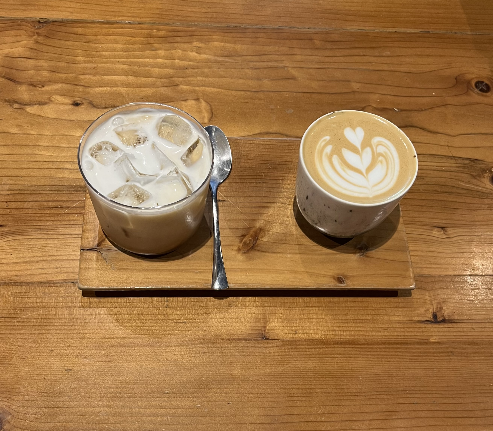

2025/03/01
5. 読書の習慣

読書の習慣は、もともと私にはなかった。 中学生の頃、「朝読書」という決まりがあったが、当時は本に興味がなく、ただページを開いたまま別のことを考えているだけだった。本を読む時間はあっても、実際には何も読んでいなかった。 しかし、喜多川泰さんの本に出会ったことで、私は自ら本を手に取るようになった。そして気づけば、読書は私の趣味の一つになっていた。 読書を通じて、知識が広がるだけでなく、想像力も豊かになる。本は、自分の世界を広げるための最高のツールなのだと実感している。